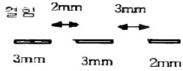
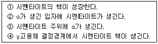

침투비파괴검사기사(구) (2012-09-15 기출문제)
1과목: 침투탐상시험원리
1. 모세관현상을 일으키는 요인이 아닌 것은?
- 응집력
- 표면장력
- 침투력
- 점착력
(정답률: 알수없음)

2. 침투탐상시험시 고온의 다공성의 세라믹 제품의 검사 방법으로 효과적인 것은?
- 취성에나멜 사용법(Brittle Enamel Method)
- 입자 여과법 (Filtered Particle Method)
- 유화성 색채 대비법 (Emulsifiable Color Contrast Method)
- 하전입자법 (Electrified Particle Method)
(정답률: 알수없음)
3. 담금(침지)법은 시험체를 침투액 탱크에 담그어 침투처리 하는 방법으로, 분무나 솔질법에 비하여 안정된 적용방법이다. 이 방법의 특성으로 틀린 것은?
- 소형 다량 부품에 적합하다.
- 유화성 침투탐상검사에 효과적이다.
- 침투액 적용 후 배액처리를 하고 배액된 침투액은 재사용한다.
- 침투액 탱크에 먼지, 기름 등 이물질이 유입되지 않도록 관리가 필요하다.
(정답률: 알수없음)
4. 침투탐상검사는 거의 모든 재질에 대해서 검사가 가능하나 검사가 어려운 재질이 있다. 이러한 검사가 가장 어려운 재질은 무엇인가?
- 다공성 또는 흡수성 재질
- 비다공성 또는 매끄러운 표면을 가진 재질
- 비흡수성 또는 반들반들한 재질
- 비다공성 또는 비흡수성 재질
(정답률: 알수없음)
5. 품질관리를 위한 탐상제의 점검 중 건식현상제는 일반적으로 어떻게 점검하는 것이 효율적인 방법인가?
- 보통 육안으로 이물질의 혼입이 없는지 등을 점검한다.
- 농도와 비중을 측정하여 점검한다.
- 용해시켜 침투제 오염 여부를 점검한다.
- 온 · 습도계를 이용하여 규정치 내에 있는지 점검한다.
(정답률: 알수없음)
6. 균열검출에 사용되는 침투제의 감도를 비교하는 방법으로 옳은 것은?
- 비중을 측정하기 위해 비중계(Hydrometer)를 사용한다.
- 균열이 존재하는 알루미늄 시편을 사용한다.
- 접촉각을 측정한다.
- 메니스커스검사(Meniscus test)를 한다.
(정답률: 알수없음)
7. 침투탐상검사에서 침투액의 침투 성능에 직접적으로 영향을 미치는 요인이 아닌 것은?
- 점성
- 적심성
- 가연성
- 표면장력
(정답률: 알수없음)
8. 와전류탐상시험시 시험의 가장 큰 문제점에 해당하는 것은?
- 미소한 결함을 탐상할 수 없다.
- 정확한 전기 전도도를 측정할 수 없다.
- 미지변수에 의한 다양한 출력 지시치가 나타난다.
- 검사 누락부위를 방지하기 위하여 검사를 저속도로 해야 한다.
(정답률: 알수없음)
9. 비파괴시험 기술자의 임무라 볼 수 없는 것은?
- 시험결과의 정확성 판정
- 제조공정의 철저한 관리
- 제품의 품질보증에 대한 책임
- 시험기술 향상을 위해 꾸준한 노력
(정답률: 알수없음)
10. 400℃ 이상의 온도에서 일정 하중조건하에서 장시간 사용했던 재료에 발생하는 파괴로, 일반적으로 모재에 많이 발생하는 균열은?
- 열간균열
- 피로균열
- 응력부식균열
- 크리프균열
(정답률: 알수없음)
11. 자분탐상검사의 특징을 설명한 것 중 틀린 것은?
- 비철금속 결함탐상에 탁월하다.
- 두 방향 이상의 검사가 요구된다.
- 표면근처에 있는 결함에 강하게 응답하여 지시를 나타낸다.
- 자속이 셀수록 결함에 강하게 응답하여 지시를 나타낸다.
(정답률: 알수없음)
12. 0.03 ~ 3cm 파장의 전자파를 이용하여 플라스틱 등의 결함을 검출하는 비파괴검사법은?
- 음향방출시험
- 초음파탐상시험
- 마이크로파시험
- 와전류탐상시험
(정답률: 알수없음)
13. 초음파탐상검사의 특징을 설명한 것 중 틀린 것은?
- 검사결과를 신속히 알 수 있다.
- 표준시험편 또는 대비시험편 등이 필요하다.
- 균열과 같은 미세한 결함에 대해서도 감도가 높다.
- 조대한 결정입자를 가진 시험체의 검사에 적합하다.
(정답률: 알수없음)
14. 압력변화시험의 특성을 설명한 것 중 틀린 것은?
- 누설시험 시간이 보다 길어진다.
- 특별한 추적가스가 필요 없다.
- 시험체의 총누설량과 누설 위치를 정확히 검출할 수 있다.
- 대형 압력용기나 진공시스템에서도 이미 설치되어 있는 압력게이지를 이용하여 누설검사를 수행할 수 있다.
(정답률: 알수없음)
15. X선 발생장치의 유효 관전압이 200kV일 때 발생되는 X선의 최소 파장은?
- 6.2 × 10-10m
- 6.2 × 10-12m
- 3.1 × 10-10cm
- 3.1 × 10-12cm
(정답률: 알수없음)
16. 강제 대형 압력용기에 부착된 노즐의 표면 결함을 검출하기 가장 적합한 비파괴검사법은?
- 누설검사
- 자분탐상시험
- 방사선투과시험
- 초음파탐상시험
(정답률: 알수없음)
17. 누설검사법 중 가열양극 할로겐누설검출기의 특성을 설명한 것으로 옳은 것은?
- 대기압 하에서 작업이 가능하다.
- 모든 추적가스에서 응답이 잘 이루어진다.
- 인화성 재질이나 폭발성 대기 근처에서도 사용할 수 있다.
- 할로겐 추적가스에 장시간 노출되어도 누설신호에 변화가 없어 측정치의 장시간 보존이 용이하다.
(정답률: 알수없음)
18. 미세한 표면 홈을 발견하기에 가장 우수한 침투탐상시험법은?
- 수세성 염색침투탐상시험법
- 후유화성 염색침투탐상시험법
- 후유화성 형광침투탐상시험법
- 용제제거성 형광침투탐상시험법
(정답률: 알수없음)
19. 다음 중 0 K (캘빈온도)와 동등한 온도를 나타내는 것은?
- -360 · R
- -170 · F
- 0℃
- -273℃
(정답률: 알수없음)
20. 와류탐상검사에서 전류 흐름에 대한 코일의 총 저항을 무엇이라 하는가?
- 인덕턴스
- 리액턴스
- 임피던스
- 리프트옵
(정답률: 알수없음)
2과목: 침투탐상검사
21. 스테인리스강과 알루미늄의 표면에 동일한 침투제를 적용했을 때 다음의 설명으로 옳은 것은? (단, 탐상표면의 물리적 특성은 동일한 것으로 간주한다.)
- 알루미늄과 침투제의 접촉각은 스테인리스강과 침투제의 접촉각과 같다.
- 알루미늄과 침투제의 접촉각이 스테인리스강과 침투제의 접촉각보다 크다.
- 알루미늄과 침투제의 접촉각이 스테인리스강과 침투제의 접촉각보다 작다.
- 접촉각은 재질의 종류에는 영향을 받지 않는다.
(정답률: 알수없음)
22. 침투탐상검사에서 미지의 균열이 나타나 원인을 분석해본 결과 연마(grinding)를 지나치게 한 것이었다. 다음 중 이 균열의 형태는 어떤 모양이겠는가?
- 별 모양
- 파도 모양
- 격자 무늬 모양
- 길고 폭이 넓은 모양
(정답률: 알수없음)
23. 수세성 침투탐상시험에서 현상법에 따른 건조처리의 순서를 옳게 나타낸 것은?
- 건식 현상법 - 현상처리 후에 건조처리
- 습식현상법 - 세척처리 후에 건조처리
- 속건식 현상법 - 현상처리 후에 건조처리
- 무현상법 - 세척처리 후에 건조처리
(정답률: 알수없음)
24. 다음 중 습식 현상법의 특성을 설명한 것으로 틀린것은?
- 현상제 적용 후 건조 처리가 필요하다.
- 수세성 침투탐상과 조합하여 사용하면 효과적이다.
- 시험체 표면에 일정한 표막을 형성하여 배경 증대효과가 있다.
- 지시모양의 확대가 적고 결함 지시모양이 선명하여 분해능이 향상된다.
(정답률: 알수없음)
25. 후유화성 형광침투탐상시험에 대한 설명 중 잘못된것은?
- 미세한 결함도 검출 가능하다.
- 비교적 얕은 결함도 검출 가능하다.
- 수분이 혼입되어도 침투액의 성능저하가 적다.
- 거친 표면을 가진 시험체에도 적용할 수 있다.
(정답률: 알수없음)
26. 수도 및 전원이 없는 장소에서 침투탐상검사를 실시하고자 할 때 가장 적당한 방법은?
- 후유화성 형광 침투탐상시험
- 후유화성 염색 침투탐상시험
- 용제제거성 형광 침투탐상시험
- 용제제거성 염색 침투탐상시험
(정답률: 알수없음)
27. 유화제를 적용할 때의 주의사항에 대한 설명 중 틀린 것은?
- 유화처리는 붓을 사용하여 칠하는 방법을 사용해서는 안 된다.
- 유화제와 침투액이 잘 혼합되도록 물리적으로 혼합시키는 방법을 사용한다.
- 유화시간이 짧으면 세척부족이 되며, 길면 과세척이 된다.
- 대형 부품은 세척과정에서 유화제의 적용 얼룩이 생기지 않도록 시험체를 물속에 담그는 유화 정지처리를 하기도 한다.
(정답률: 알수없음)
28. 다음 중 자외선조사장치의 수은 등 수명 감소에 직접적인 영향을 미치는 것은?
- 필터의 오염
- 점등 횟수
- 검사실 온도
- 광전소자의 이상
(정답률: 알수없음)
29. 침투탐상시험에 사용되는 침투액이 갖고 있어야 하는 중요한 성질로 틀린 것은?
- 유동성이 있어야 한다.
- 점성이 낮아야 한다.
- 휘발성이 높아야 한다.
- 적심성이 좋아야 한다.
(정답률: 알수없음)
30. 침투탐상시험 경과 의사모양이 나타났을 때의 원인에 대한 설명이다. 어느 경우에 가장 많은가?
- 전처리가 부족한 경우
- 과세척을 한 경우
- 건조시간을 너무 길게 한 경우
- 침투시간을 너무 길게 한 경우
(정답률: 알수없음)
31. 현상제 중 실온에서 휘발성이 높아 신속히 건조되어 별도의 건조나 가열이 불필요하며, 시험체에 적절한 두께의 현상막을 만들 수 있는 현상제는?
- 건식 현상제
- 습식 현상제
- 필름 현상제
- 속건식 현상제
(정답률: 알수없음)
32. 침투탐상시험 방법 중 대형 부품, 구조물을 부분적으로 시험할 때 가장 적절한 시험방법은?
- 후유화성 형광 침투탐상시험, 후유화성 염색 침투탐상시험
- 후유화성 형광 침투탐상시험, 용제제거성 형광 침투탐상시험
- 용제제거성 형광 침투탐상시험, 용제제거성 염색 침투탐상시험
- 수세성 형광 침투탐상시험, 수세성 염색 침투탐상시험
(정답률: 알수없음)
33. 다음 중 부품에 묻어있는 기름이나 그리스를 제거하는 전처리 방법 중 가장 적합한 방법은?
- 철솔질(wire brush)
- 알칼리 세척제
- 샌드 블라스팅(sand blasting)
- 증기 세척
(정답률: 알수없음)
34. 용제제거성 침투탐상시험에서 현상처리를 효과적으로 하기 위해서 건조를 어느 때에 하는 것이 바람직한가?
- 건식 현상버에서는 세척처리 후에 행한다.
- 습식 현상법에서는 현상처리 후에 행한다.
- 무현상법에서는 현상처리 후에 행한다.
- 속건식 현상법에서는 어느 때에 해도 지장이 없다.
(정답률: 알수없음)
35. 침투탐상검사에 사용하는 대비시험편의 사용방법을 옳게 설명한 것은?
- 탐상제의 침투시간을 설정하는데 사용한다.
- A형 비교시험편으로 온도에 의한 영향을 점검할 때에는 중간의 홈을 기준으로 기준탐상제와 비교탐상제를 동시에 확인한다.
- 대비시험편은 탐상제의 성능 및 조작방법의 적당 여부를 조사하는데 사용한다.
- 한번 사용한 대비시험편은 재사용이 불가능하다.
(정답률: 알수없음)
36. 대비시험편을 사용한 후에 남아있는 잔류물을 제거하기 위한 후처리 방법으로 적당하지 않는 것은?
- 증기세척 처리
- 유기용제에 침자(담금) 처리
- 초음파 세척 처리
- 산세척 처리
(정답률: 알수없음)
37. 다음 중 현상처리에 관한 설명으로 틀린 것은?
- 미세분말 입자 사이에 생긴 공간에 의한 모세관현상을 이용하여 표면으로 흡출(bleed out)되게 한다.
- 실제 결함의 크기보다 확대된 지시모양을 만들어 관찰을 쉽게 한다.
- 지시모양에 대한 대비(contrast)를 높이는 역할을 한다.
- 제거처리 후에 남아있는 침투액을 세척하는 역할을 하여 결함만을 더욱 선면하게 나타내게 한다.
(정답률: 알수없음)
38. 사용 중인 탐상제를 비교, 점검하기 위한 기준 탐상제의 설명으로 옳은 것은?
- 적용 규격에서 정하고 있는 침투용 탐상제
- 결함지시의 모양을 표준화하는데 사용되는 침투용 탐상제
- 탐상제를 구입할 때 그 일부를 깨끗한 용기에 채취하여 보존하고 있는 침투용 탐상제
- 탐상 강도를 높이기 위하여 사용 중인 탐상제에 첨가하여 사용되는 침투용 탐상제
(정답률: 알수없음)
39. 침투탐상검사에 사용되는 장치와 기구에 관한 설명으로 적절하지 않은 것은?
- 수세성 형광침투탐상시험에서 세척처리 장치에는 자외선조사등이 설치되어 있어야 한다.
- 시험체가 대형인 경우에는 주로 호스 및 노즐을 이용하여 침투처리를 한다.
- 자동 현상장치에서는 주로 담금법으로 현상처리를 한다.
- 자외선 조사장치에 사용되는 필터는 일반적으로 적자색(red-purple) 유리를 사용한다.
(정답률: 알수없음)
40. 비교적 시험체의 표면 거칠기가 거친 것에 적합한방법으로, 소형의 다량 부품이나 나사부와 같은 복잡한 형상의 시험체를 탐상할 수 있는 방법은?
- 수세성 형광 침투탐상검사
- 용제제거성 염색 침투탐상검사
- 후유화성 형광 침투탐상검사
- 용제제거성 형광 침투탐상검사
(정답률: 알수없음)
3과목: 침투탐상관련규격
41. 침투탐상 시험방법 및 침투지시모양의 분류(KS B 0816)에 따라 형광 침투탐상검사에 사용할 자외선조사 등에서 나오는 자외선의 파장 범위는?
- 250~300 nm
- 320~400 nm
- 420~500 nm
- 520~630 nm
(정답률: 알수없음)
42. 침투탐상 시험방법 및 침투지시모양의 분류(KS B 0816)에 따라 압력용기를 침투탐상시험하였더니 그림과 같은 결함이 나타났다. 이 결함의 개수와 길이는?

- 3개의 결함, 각각 3mm, 3mm, 2mm
- 2개의 결함, 각각 8mm, 2mm
- 1개의 결함 8mm
- 1개의 결함 13mm
(정답률: 알수없음)
43. 침투탐상 시험방법 및 침투지시모양의 분류(KS B 0816)에 따른 침투탐상시 전수검사를 수행한 시험품에 합격표시가 필요한 경우의 표시 방법 중 틀린 내용은?
- 각인 또는 부식에 의한 표시를 할 때에는 P의 기호를 사용한다.
- 각인 또는 부식에 의한 표 시가 곤란할 때는 착색(적갈색)한다.
- 시험품에 표시할 수 없을 경우는 시험기록에 기재한 방법에 따른다.
- 시험품에 ⓟ의 기호 또는 착색(황색) 표시한다.
(정답률: 알수없음)
44. 보일러 및 압력용기에 대한 침투탐상검사(ASME Sec.V Art.6)에서 침투탐상시험에 관하여 수록한 규격은?
- SE - 94
- SE - 142
- SE - 165
- SE - 650
(정답률: 알수없음)
45. 주강품의 침투탐상검사(KS D ISO 4987)에서 판정의 불연속 지시를 측정할 틀 범위는 얼마인가?
- 100 × 100 mm
- 1⑤ × 148 mm
- 125 × 184 mm
- 150 × 300 mm
(정답률: 알수없음)
46. 침투탐상 시험방법 및 침투지시모양의 분류(KS B 0816)에 따른 탐상시험에서 세척처리에 스프레이 노즐을 사용할 때 특별한 규정이 없는 한 최대 수압은 약 얼마인가?
- 200kPa
- 225kPa
- 250kPa
- 275kPa
(정답률: 알수없음)
47. 보일러 및 압력용기에 대한 침투탐상검사(ASME Sec.V Art.6)에 대한 내용으로 틀린 것은?
- 계측기를 수리한 경우 바로 교정되어야 한다.
- 염색침투탐상검사는 형광침투탐상검사 이후에 실시할 수 없다.
- 가시광 및 형광 계측기는 적어도 일년에 한번은 교정되어야 한다.
- 침투제는 침지, 붓칠, 분무와 같은 적절한 방법을 적용한다.
(정답률: 알수없음)
48. 치투탐상 시험방법 및 침투지시모양의 분류(KS B 0816)에 의해 다음 독립 결함 중 원형상 결함이라 판단할 수 없는 것은?
- 편석
- 수축공
- 라미네이션
- 슬래그 혼입
(정답률: 알수없음)
49. 보일러 및 압력용기에 대한 표준침투탐상검사(ASME Sec.V Art.24 SE-165)에서 표면의 전처리 방법중 불연속의 변형으로 시험 결과의 감도 저하를 발생할 우려가 가장 큰 것은?
- 증기 세척
- 초음파 세척
- 샌드 블라스트
- 산 세척
(정답률: 알수없음)
50. 침투탐상 시험방법 및 침투지시모양의 분류(KS B 0816)에서 다음 중 “특수한 현상제를 사용하는 방법”의 기호로 옳은 것은?
- D
- A
- W
- E
(정답률: 알수없음)
51. 침투탐상 시험방법 및 침투지시모양의 분류(KS B 0816)에서 탐상제를 관리할 때에 소정의 농도를 유지하여야 하는 탐상제는 어느 것인가?
- 습식 및 속건식 현상제
- 용제 제거성 침투액 및 세척액
- 건식 현상제 및 형광 침투액
- 기준 탐상제 및 후유화제
(정답률: 알수없음)
52. 보일러 및 압력용기에 대한 침투탐상검사(ASME Sec.V Art.6)에 의해 용접부위를 침투탐사시험할 때 용접선을 중심으로 양측으로 적어도 어느 정도까지 전처리를 하여야 하는가?
- 12.7mm(0.5 inch)
- 25.4mm(1 inch)
- 38.1mm(1.5 inch)
- 50.8mm(2.0 inch)
(정답률: 알수없음)
53. 침투탐상 시험방법 및 침투지시모양의 분류(KS B 0816)에 따른 침투탐상시험에서 결함의 종류가 아닌 것은?
- 독립 결함
- 연속 결함
- 분산 결함
- 불연속 결함
(정답률: 알수없음)
54. 침투탐상 시험방법 및 침투지시모양의 분류(KS B 0816)에서 규정된 A형 대비시험편에서의 인공홈의 깊이는 얼마로 규정하고 있는가?
- 1.0mm
- 1.5mm
- 2.0mm
- 2.5mm
(정답률: 알수없음)
55. 침투탐상 시험방법 및 침투지시모양의 분류(KS B 0916)에 따라 사용 중인 용제제거성 침투액의 성능시험을 A형 대비시험편을 사용하여 하고자 할 경우 옳은 것은?
- 1조의 대비시험편 각각의 면에 사용 중인 침투액과 기준침투액을 적용하고, 침투시간을 서로 다르게 하고 잉여침투제 제거처리부터 동일한 조건으로 실시한 후 침투력을 비교한다.
- 1조의 대비시험편 각각의 면에 사용 중인 침투액과 기준침투액을 적용하고, 용제제거 처리를 서로 다르게 하고 현상처리를 동일한 조건으로 실시한 후 용제제거성을 비교한다.
- 1조의 대비시험편 각각의 면에 사용 중인 침투액과 기준침투액을 적용하고 동일 조건으로 시험을 실시하여 지시모양을 비교한다.
- 1조의 대비시험편 각각의 면에 사용 중인 침투액과 기준침투액을 적용하여 서로 다른 조건으로 실시하고 지시모양을 비교한다.
(정답률: 알수없음)
56. 침투탐상 시험방법 및 침투지시모양의 분류(KS B 0816)에서 형광 침투탐상시험 결과를 관찰시 옳은 설명은?
- 관찰하기 전에 1분 이상 어두운 곳에서 눈을 적응시킨다.
- 침투지시 모양의 관찰은 현상제 적용 후 1분 사이에 하는 것이 바람직하다.
- 형광침투액을 사용하는 시험에서 500μW/cm2 미만의 자외선을 비춰서 관찰한다.
- 염색침투액을 사용하는 시험에서는 조도가 500 Lx미만의 자연광 또는 백색광에서 관찰한다.
(정답률: 알수없음)
57. ASME Sec. Ⅷ, Div.1 의 침투탐상시험 중 합격기준에 대한 설명으로 틀린 것은?
- 선형 관리지시는 길이에 관계없이 불합격이다.
- 3/16 inch(5 mm) 이상인 원형관련 지시는 불합격이다.
- 이웃불연속 모서리 사이의 간격이 1/16inch(1.5mm)이하로 분리되어 일직선상에 3개 또는 그 이상으로 배열되어 있는 원형 관련지시는 불합격이다.
- 관련지시 모양은 실제의 불연속보다 크게 나타날 수도 있으나, 합격 여부의 판정은 지시모양의 크기를 근거로 한다.
(정답률: 알수없음)
58. 보일러 및 압력용기에 대한 침투탐상검사(ASME Sec.V Art.6)에 따라 침투탐상시험을 할 때 침투탐상 액의 유황성분 함유량을 반드시 분석하여야 하는 검사체의 재질은?
- 티타늄합금
- 니켈합금
- 오스테나이트계 스테인리스강
- 탄소강
(정답률: 알수없음)
59. 보일러 및 압력용기에 대한 표준침투탐상검사(ASME Sec.V, Art.24 SE-165)에 따라 원자력 부품에 형광침투탐상시험을 적용할 때 시험체 표면에서 자외선등의 강도는 얼마 이상이 되어야 하는가?
- 300 μW/cm2
- 500 μW/cm2
- 700 μW/cm2
- 1000 μW/cm2
(정답률: 알수없음)
60. 항공우주용 기기의 침투탐상 검사방법(KS W 0914)에 의한 수성현상제의 체류시간은 구성 부품이 건조하고 나서 얼마 범위인가?
- 1분 ~ 30분
- 3분 ~ 1시간
- 5분 ~ 3시간
- 10분 ~ 2시간
(정답률: 알수없음)
4과목: 금속재료학
61. 응력부식균열에 대한 설명 중 옳은 것은?
- 결정립 내를 통하여 깨지는 특징이 있다.
- 순금속에서 잘 발생하는 특징이 있다.
- 페라이트계 스테인리스강에서 잘 발생한다.
- 균열의 방향은 인장응력의 방향에 대하여 평행한다.
(정답률: 알수없음)
62. 가공용 알루미늄 청동에 관한 설명으로 틀린 것은?
- Al 청동은 소성가공성이 없다.
- Ni, Fe 첨가에 의하여 강도가 커진다.
- Fe 에 의하여 미립화하여 열간가공성이 개선된다.
- 열처리의 영향은 마텐자이트의 상에서 상이 석출된다.
(정답률: 알수없음)
63. 분말의 유동도에 대한 설명 중 틀린 것은?
- 분말의 유동도가 낮으면 제품의 생산성이 떨어진다.
- 분말의 유동도가 낮으면 제품의 특성이 불균일하다.
- 성형 다이의 설계시 반드시 유동도를 고려해야한다.
- 각진 형태의 제품보다는 둥근 형태의 제품에서 유동도가 중요시 된다.
(정답률: 알수없음)
64. 다음 중 켈밋(kelmet)의 주요 성분으로 옳은 것은?
- Co - Al
- Cu - Pb
- Mn - Au
- Fe - Si
(정답률: 알수없음)
65. 36%Ni - Fe 합금에 대한 설명으로 틀린 것은?
- 인바(Invar)합금이라 불리운다.
- 상온부근에서 열팽창계수가 매우 작다.
- 시계추, 바이메탈, 측량척, 표준척 등에 이용한다.
- Cr-Fe-X(Mn, Rt, Sn) 계의 인바는 강자성 합금이며 자장의 영향이 크다.
(정답률: 알수없음)
66. 경도 시험의 종류 중 대면각이 136° 이고 다이아몬드 재료의 피라미드 형성 압입자를 사용하여 경도를 나타내는 시험 방법은?
- 쇼어 경도시험
- 비커스 경도시험
- 로크웰 경도시험
- 브리넬 경도시험
(정답률: 알수없음)
67. 열전대선으로 사용되는 합금 중 최고사용온도가 가장 높은 재료는?
- Chromel - alumel
- Fe - Constantan
- Cu - Constantan
- Pt - Pt, Rh
(정답률: 알수없음)
68. 고융점 금속의 특성을 나타낸 것으로 옳은 것은?
- 증기압이 높다.
- W, Mo은 열전도율과 탄성률이 낮다.
- 고용융점 금속은 고온강도가 크다.
- Ta, Nb은 습식부식에 대한 내식성이 나쁘다.
(정답률: 알수없음)
69. Ti의 특징을 설명한 것 중 틀린 것은?
- 응력부식 균열이 적어 화학기계나 장치에 사용된다.
- 전신재에서는 섬유조직에 따른 이방성을 나타내지 않는다.
- 조밀 육방정 금속이므로 소성변형에 제약이 많고 내력/인장강도이 비가 1에 가깝다.
- 상온부근의 물 또는 공기 중에서 부동태 피막이 형성되어 금이나 백금 다음가는 우수한 내식성을 갖는다.
(정답률: 알수없음)
70. 섬유재로 모재금속을 강화시킨 섬유강화형 복합재료(FRM)의 특징으로 틀린 것은?
- 비강도가 크다.
- 2차 성형성, 접합성을 갖는다.
- 섬유축방향과 직각방향의 강도는 약하다.
- 고온에서 역학적 특성이 우수하다.
(정답률: 알수없음)
71. 알루미늄의 일반적인 성질이 아닌 것은?
- 가공성이 좋다.
- 가볍고 내식성이 있다.
- 순도가 높을수록 연질(軟質)이 된다.
- 지금(地金) 중의 Cu는 도전율을 좋게 한다.
(정답률: 알수없음)
72. 보통탄소강의 마텐자이트변태에 대한 설명 중 옳은 것은?
- 확산을 수반하는 변태이다.
- 과포화 고용체이다.
- 결정구조는 면심입방결정구조이다.
- 0.6%탄소 이하에서 플레이트 마텐자이트이다.
(정답률: 알수없음)
73. 열처리를 실시하여야 할 제품에 대하여 강표면 중의 산화 또는 탈탄작용 등에 의한 침식방지와 소정온도에서 균일한 가열을 위하여 실시하는 열처리 법은?
- 염욕처리
- 뜨임처리
- 영하처리
- 담금질처리
(정답률: 알수없음)
74. 0.8%℃가 함유되어 있는 공석강을 800℃의 γ영역으로 가열 하였다가 300~400℃ 의 온도 범위에서 향온 열처리하는 오스템퍼링처리를 하였을 경우의 조직은?
- 펄라이트(pearlite)
- 베이나이트(bainite)
- 소르바이트(sorbite)
- 템퍼드 마텐자이트(tempered martensite)
(정답률: 알수없음)
75. 다음 보기의 층상 펄라이트의 생성과정 순서로 옳은 것은?

- ① → ② → ③ → ④
- ② → ① → ③ → ④
- ④ → ① → ③ → ②
- ③ → ④ → ② → ①
(정답률: 알수없음)
76. 비중이 1.74로서 실용되는 금속 중에서 가장 가볍고, 고온에서 발화하기 쉬우므로 가루(Powder)나 박(Foil)으로 만들어 사진용 플래시로도 사용되는 것은?
- W
- Al
- Ti
- Mg
(정답률: 알수없음)
77. 가공경화가 가능한 오스테나이트 단상 조직을 갖도록 수인법으로 열처리한 강은?
- 크롬강
- 보론강
- 쾌삭강
- 하드필드강
(정답률: 알수없음)
78. 공업용 철강재료로 사용되는 철 중의 5대 주요 불순물 원소로 옳은 것은?
- C, Cr, Mn, S, P
- C, Si, Ni, S, P
- C, Si, Mn, S, P
- C, Si, Mn, Cu, P
(정답률: 알수없음)
79. Fe-C 상태도에서 0.5% C인 탄소강의 경도를 계산하면 얼마인가? (단, ferrite의 HB는 90, pearlite의 HB 는 200 이다.)
- 158.8
- 165.4
- 173.3
- 179.6
(정답률: 알수없음)
80. 탄소강에 합금원소를 첨가하여 합금강(특수강)을 만드는 목적으로 적당하지 않은 것은?
- 저온에서의 충격강도를 높인다.
- 열처리의 질량효과를 높인다.
- 부식환경에서의 내식성을 개선한다.
- 고온에서의 내열성(내산화성)을 개선한다.
(정답률: 알수없음)
5과목: 용접일반
81. 교류 아크용접기의 2차 무부하 전압이 80V, 아크 전압이 30V, 아크 전류가 300A 라 하면 역률은 약 몇% 인가? (단, 내부 손실은 4 kW 이다.)
- 54%
- 58%
- 65%
- 73%
(정답률: 알수없음)
82. 피복 아크 용접봉의 내균열성과 작업성의 관계에 대한 설명으로 틀린 것은?
- 내균열성은 피복제의 염기도가 높을수록 양호하다.
- 작업성은 피복제의 염기도가 높을수록 향상된다.
- 내균열성은 저수소계가 양호한 편이다.
- 티탄계는 일미나이트계보다 내균열성이 나쁜 편이다.
(정답률: 알수없음)
83. 용접결함의 종류 중 치수상의 결함에 해당되는 것은?
- 기공
- 슬래그
- 변형
- 언더 컷
(정답률: 알수없음)
84. 용접부의 비파괴 시험 방법 중 누설 시험을 나타내는 것은?
- LT
- ST
- VT
- ET
(정답률: 알수없음)
85. 불활성 가스 금속 아크 용접(MIG 용접)에서 와이어 송급장치의 종류가 아닌 것은?
- 미는 식(push type)
- 당기는 식(pull type)
- 푸시풀 식(push-pull type)
- 플렉시블 식(flexible type)
(정답률: 알수없음)
86. 용극식 아크 용접인 MIG용접에서 가장 많이 사용되는 용적 이행 형태는?
- 단락 이행(short circuiting transfer)
- 입상 이행(globular transfer)
- 스프레이 이행(spray transfer)
- 롯드 이행(lot transfer)
(정답률: 알수없음)
87. 재항용접의 일반적인 장점이 아닌 것은?
- 열손실이 적고, 용접부에 집중열을 가할 수 있다.
- 용접봉, 용제 등이 불필요하다.
- 용접부의 위치, 형상 등의 영향을 받지 않는다.
- 접합 강도가 비교적 크다.
(정답률: 알수없음)
88. 사용율이 40%인 교류 아크 용접기를 정격 2차 전류로 용접할 때 지켜야 할 사항으로 가장 적합한 설명은?
- 아크 발생시간 4분 후 휴식시간 6분
- 아크 발생시간 10분 후 휴식시간 15분
- 아크 발생시간 10초 후 휴식시간 15초
- 아크 발새시간 4시간 후 휴식시간 10시간
(정답률: 알수없음)
89. 직류 아크 용접기에서 발전형과 비교한 정류기형의 특징 설명으로 올바른 것은?
- 완전한 직류를 얻는다.
- 전원이 없는 장소에서 사용 가능하다.
- 소음이 나지 않는다.
- 보수와 점검이 어렵다.
(정답률: 알수없음)
90. 일렉트로 슬래그 용접법에 대한 일반적인 특징 설명으로 틀린 것은?
- 용접 진행 중 용접부를 직접 관찰할 수 있다.
- 최소한의 변형과 최단 시간의 용접법이다.
- 용접 능률과 용접 품질이 우수하다.
- 높은 입열로 인하여 용접부의 기계적 성질이 저하될 수 있다.
(정답률: 알수없음)
91. 모재의 한쪽 또는 양쪽에 여러 개의 돌기를 만들어 이 부분에 용접전류를 집중시켜 압접하는 방식의 용접법은?
- 롤러 점용접
- 포일 심용접
- 프로젝션 용접
- 업셋 용접
(정답률: 알수없음)
92. 용접재를 서로 맞대어 가압하면서 대전류를 통하고 축방향에 큰 압력을 주어 용접하는 전기저항 용접법은?
- 업셋 용접
- 프로젝션 용접
- 심 용접
- 마찰 용접
(정답률: 알수없음)
93. 중판 이상의 두꺼운 판의 용접을 위한 홈 설계시 고려사항으로 틀린 것은?
- 홈의 단면적은 가능한 작게 한다.
- 최소 10° 정도는 전후 좌우로 용접봉을 움직일 수 있는 홈 각도가 필요하다.
- 루트 반지름은 가능한 작게 한다.
- 적당한 루트 간격과 루트 면을 만들어 준다.
(정답률: 알수없음)
94. 극히 짧은 지름의 용접물을 접합하는데 사용하고, 전원은 축적된 직류를 사용하며, 피용접물을 두 전극사 이에 끼운 후에 전류를 통하고 빠른 속도로 직접 피용 접물이 충돌하여 행하는 용접법은?
- 업셋 용접
- 퍼커션 용접
- 플래시 버트 용접
- 인터랙 점 용접
(정답률: 알수없음)
95. 심(seam) 용접법에서 용접전류의 통전방법이 아닌것은?
- 직 ㆍ 병렬 통전법
- 단속 통전법
- 맥동 통전법
- 연속 통전법
(정답률: 알수없음)
96. 다음 중에서 압접에 해당하는 용접방식은?
- 스터드 용접
- 전자빔 용접
- 테르밋 용접
- 초음파 용접
(정답률: 알수없음)
97. 전기가 필요 없고, 레일의 접합, 차축, 선박의 선미프레임(stern-frame) 등 비교적 큰 단면을 가진 주조나 단조품의 맞대기 용접과 보수용접에 사용되는 용접법은?
- 플라스마 아크 용접
- 테르밋 용접
- 전자 빔 용접
- 레이저 용접
(정답률: 알수없음)
98. 용접물을 정반에 고정시키거나 보강재를 이용하여 변형을 방지하는 용접 변형 방지법의 종류는?
- 억제법
- 역변형법
- 냉각법
- 피닝법
(정답률: 알수없음)
99. 용접부에 생기는 결함 중 용착금속의 인장 또는 굴곡 파단면에 생기는 고기 눈 모양의 은백색의 파면과 관계가 있는 것은?
- 흑연화
- 내식성 저하
- 은점
- 언더비드 균열
(정답률: 알수없음)
100. 아세틸렌과 접촉하여 폭발성이 있는 화합물이 생성되지 않는 것은?
- 구리(Cu)
- 납(Pb)
- 은(Ag)
- 수은(Hg)
(정답률: 알수없음)